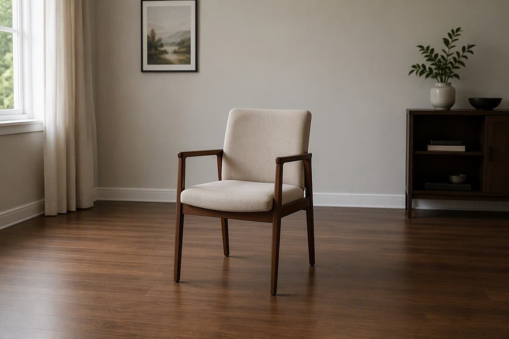
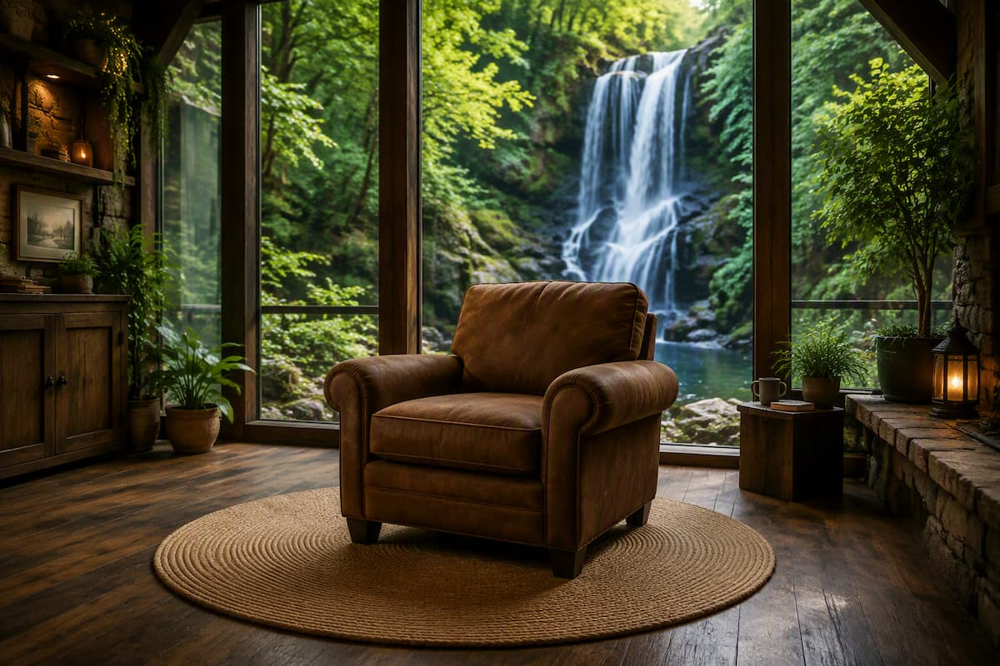
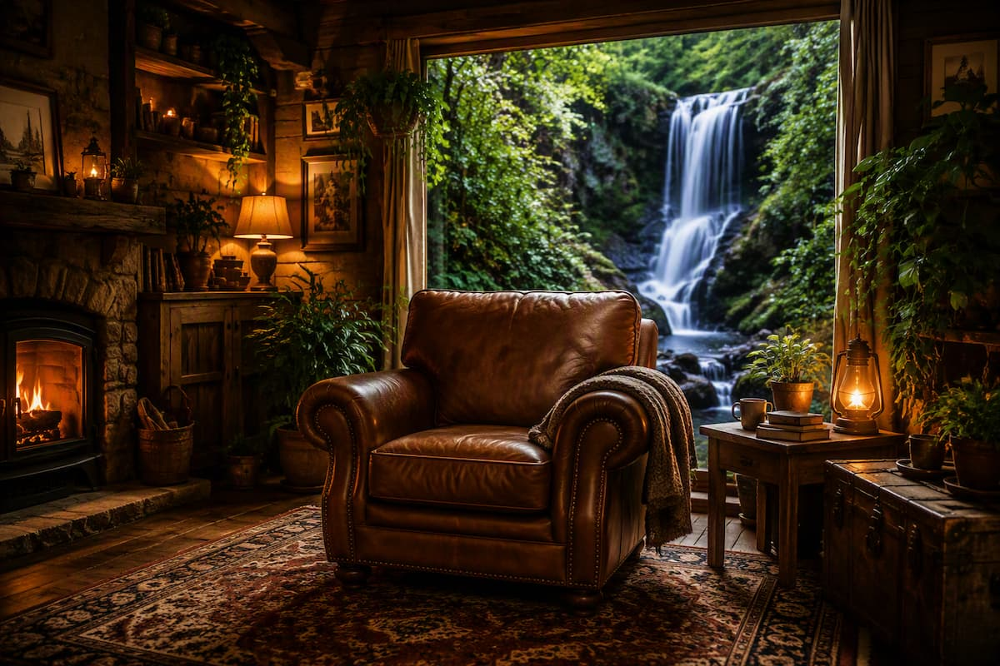
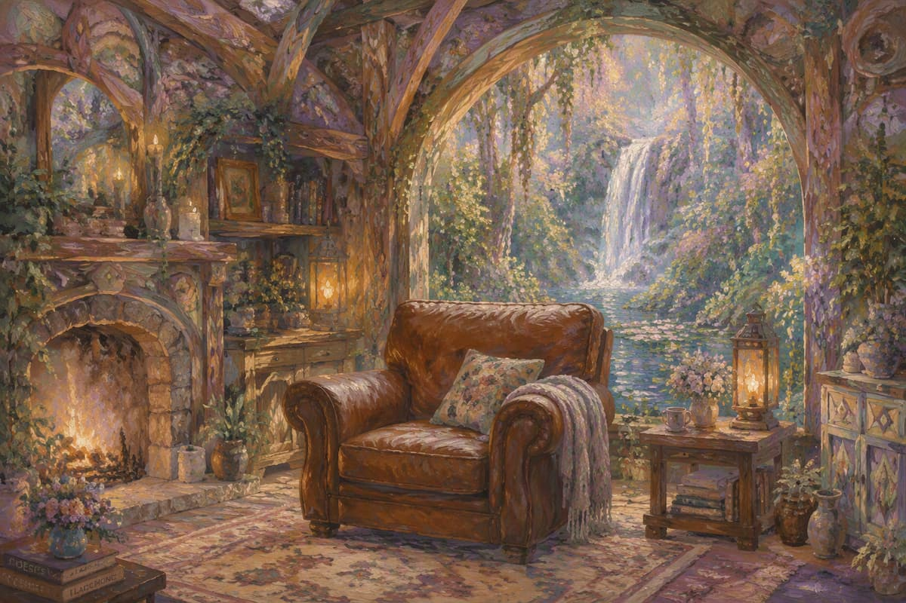
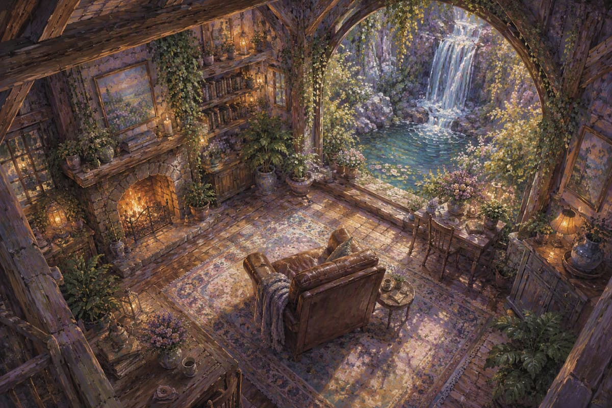
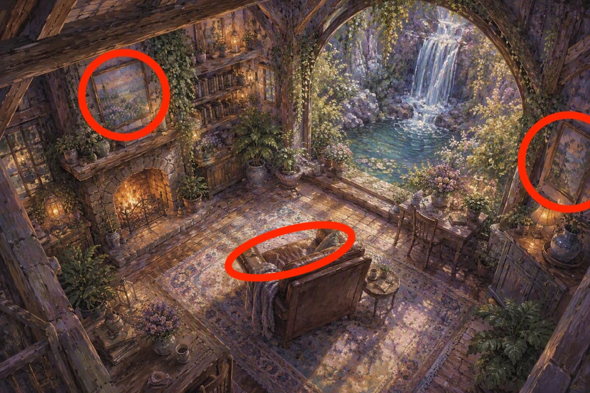
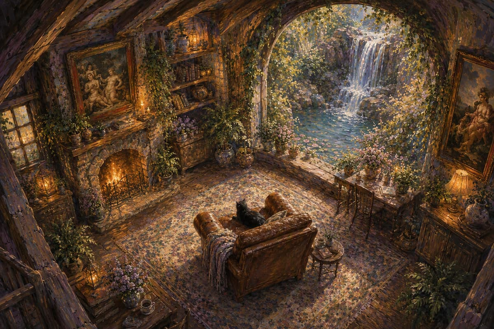
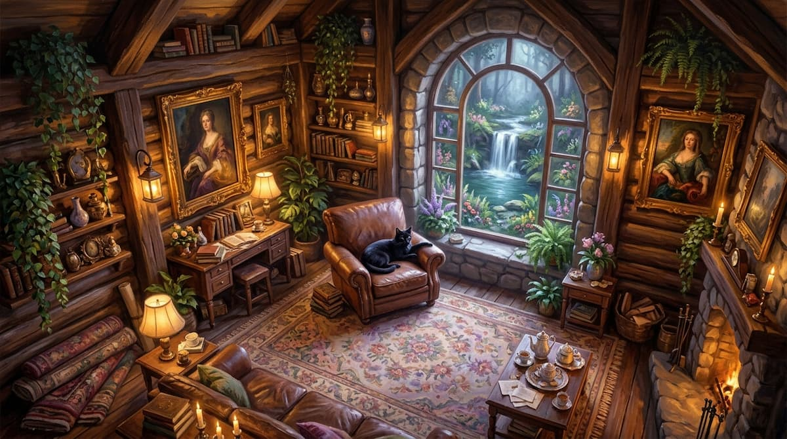
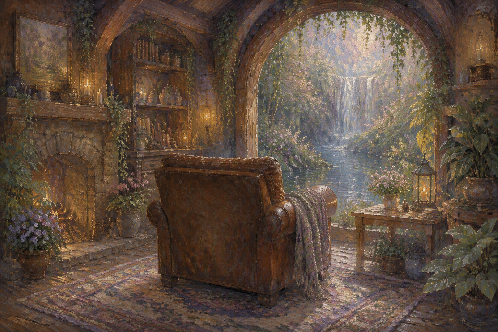

The Sequence
Each step below builds on the last — a scene added, a style borrowed, a mistake corrected — tracing how one plain armchair became a fully imagined room.

COPILOT
01
Generate a chair in the middle of a room.

COPILOT
02
A comfy brown chair in the middle of a room full of nature and a view of a waterfall.

COPILOT
03
a comfy brown chair in the middle of a room full of nature and a view of a waterfall. Add warm lighting and plants. try a cozy cabin/vintage style room.

COPILOT
04
a comfy brown chair in the middle of a room full of nature and a view of a waterfall. Add warm lighting and plants. try a cozy cabin/vintage style room rendered as a soft pastel oil painting on raw canvas with a dream like atmosphere, in the style of Claude Monet, a collaboration between Rodarte and Dior

COPILOT
05
Add a Bird's-eye three-quarter view from the upper corner of the cabin, looking down toward the chair and waterfall. The viewer can see the rug, furniture layout, fireplace, plants, and window from above. Soft pastel oil painting, textured canvas, impressionistic brushwork, fantasy realism, warm glowing light, highly artistic composition.

COPILOT
06
The reference, marked up.

COPILOT
07
Using the marked-up photo — add a black cat on the couch, and turn the circled areas into renaissance oil paintings.

GEMINI
08
Write a prompt for a different image generator, based on this image.

COPILOT
09
I hadn’t specified the angle correctly. The issue is the chair’s angle itself is backwards not the entire environment.